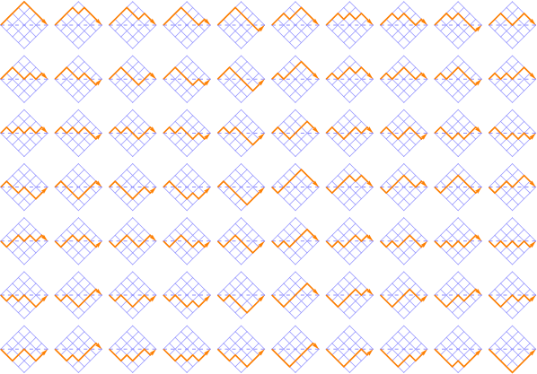
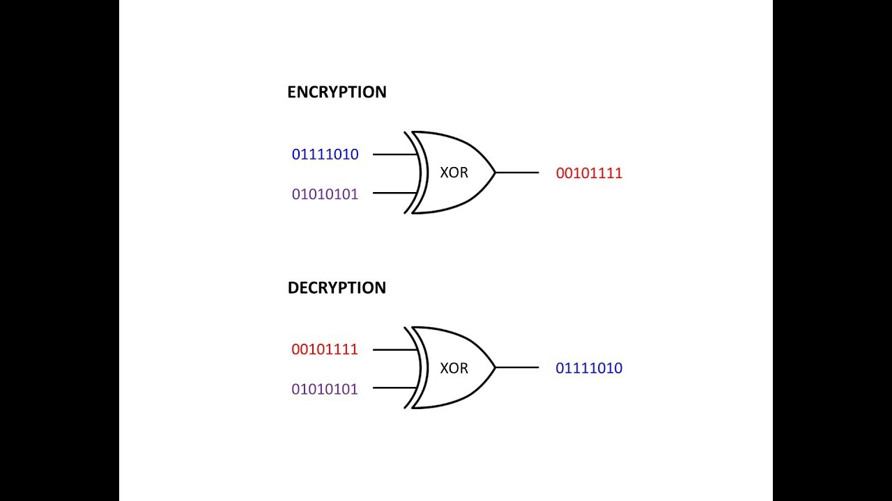
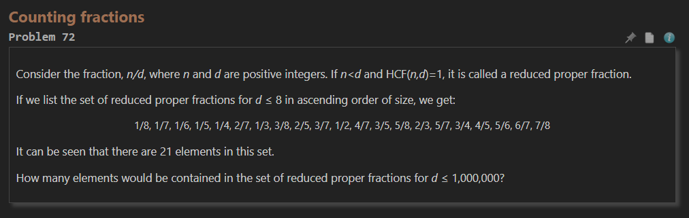

In this section I will highlight four problems from Project Euler that I've solved and found interesting. In reality there are a lot more that are interesting to me, but I'll limit myself to four problems.
Project Euler #15: Lattice Paths
This problem covers solving for the amount of paths in a 20x20 grid where you start from the top left and end in the bottom right. This one was interesting because the most optimal solution was actually taught in the now removed Math course that was offered in the Computer Science 420-AO program at John Abbott College. It can be solved simply with the equation n Choose r. Which if you remember is (factorial n) / ((factorial r) * (factorial (n - r))).
Project Euler #59: XOR Decryption
This problem covers solving for a 3 character long key and decrypting the given message with it, and then calculating the sum of the ASCII values of the original message. This problem was interesting because shortly after completion the topic of decrypting was further covered in my IT class. If I recall correctly I solved this problem by going through the text with a possible key and matching the created strings to a dictionary of common english words and took the result with the highest amount of matched words.
Project Euler #72: Counting Fractions
This problem covers finding all distinct fractions k/n from where 2 <= k < n and 2 <= n <= 1,000,000. This problem is interesting because of the solution I found. In the beginning I was a little stuck, unsure how I'd be able to just ignore repeat possibilities. I then started to draw it out and noticed that all you need to do is calculate the summation of Eulter Totients (Phi n) from 2 <= n <= 1,000,000.
Project Euler #96: Sudoku

This problem covers solving for unsolved Sudoku puzzles and then calculating the summation of the top three digits of each puzzle as a number. This problem was very interesting to me because I ended having to use an algorithm to solve it. A backtracking algorithm, to be precise. Algorithms are interesting to me, I like optimal solutions.
Feel free to check out my Github for actual code solutions to some of the first one hundred Project Euler problems!